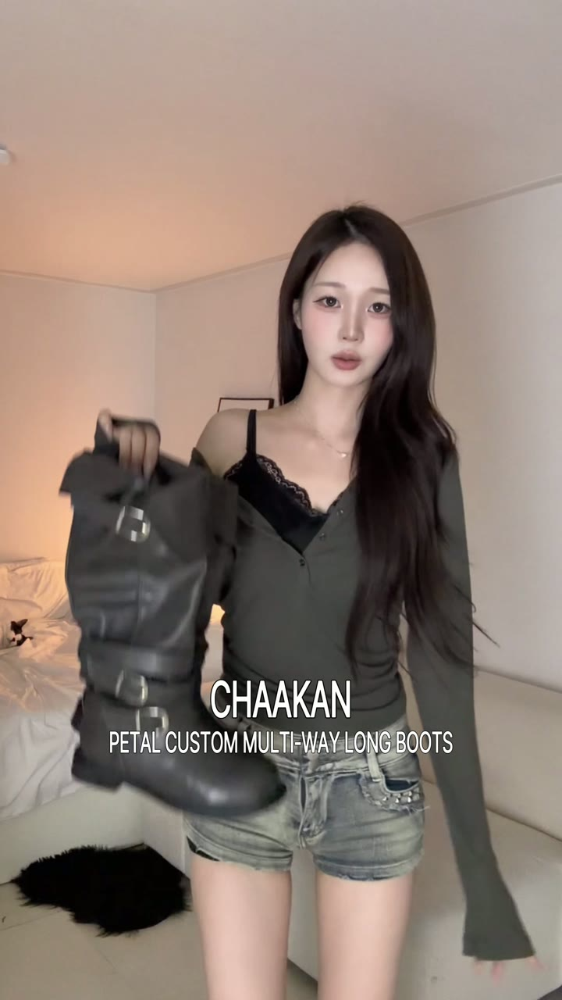
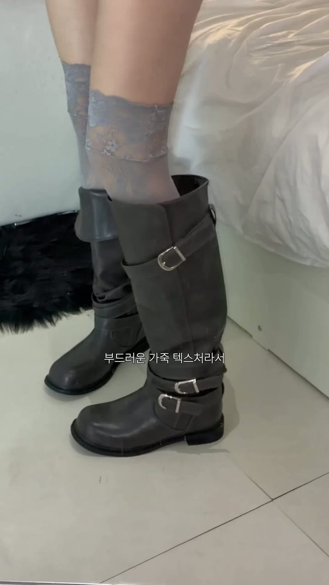
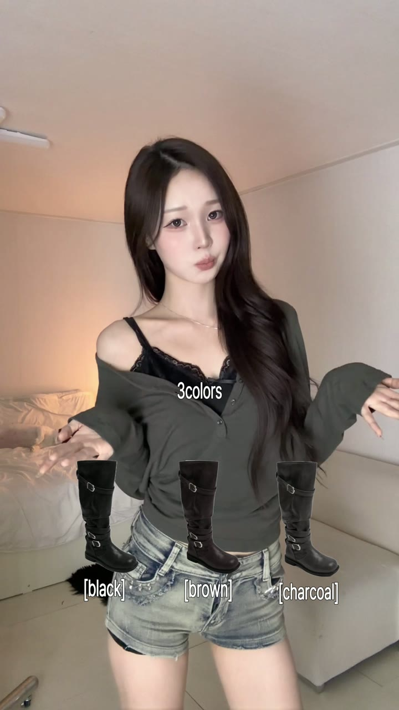
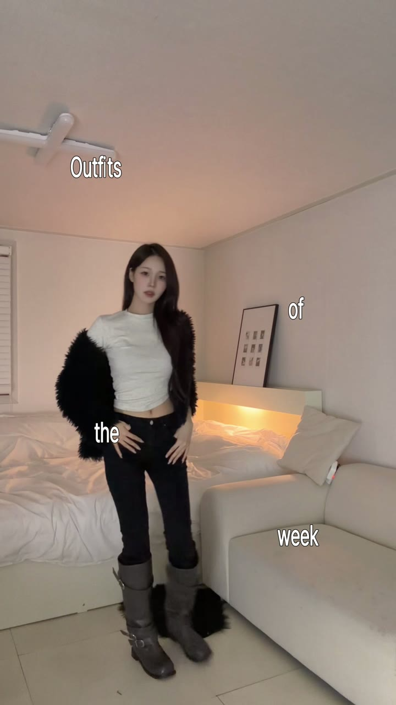

모나님 페탈 부츠 영상 가이드
보내주신 초안을 바탕으로, 아래 5장면으로 정리해 주세요.
기존 촬영본을 활용해 27초 안팎으로 이어가요.
이번에 소개할 제품페탈 · 차콜
부츠가 크게 보이는 컷으로 시작해요

기존 촬영본 활용 · 첫 화면 글자 배치 예시
초안에서 부츠를 얼굴 옆에 든 장면(약 9~10초)을 앞으로 옮겨 주세요. 얼굴과 부츠가 함께 크게 보이게, 천장과 빈 배경은 적게 잡아요. 부츠를 든 컷 뒤에 착화 확대 컷을 짧게 이어 주세요. 앞부분 코디 모음은 짧게 줄이고 착화 장면에 나누어 넣어 주세요.
첫 화면에 넣을 글자 · 0초부터글꼴·색은 모나님 영상 톤에 맞춰 주세요. 부츠 앞코와 버클은 글자로 가리지 않아요.
무신사 랭킹 사진을 크게 보여 주세요


스트랩을 빼고, 길이를 바꿔 보여 주세요
초안의 약 18~27초 장면을 그대로 활용해 주세요. 동작이 끝난 모습까지 보이게 연결해요.
먼저스트랩을 빼고, 뺀 뒤 모습까지 보여 주세요.
이어서윗부분을 접는 손동작과 접은 뒤 모습을 보여 주세요.
마지막한쪽은 접고 한쪽은 펴서, 두 길이가 나란히 보이게 해 주세요.
장면마다 한 줄씩 크게접으면 미들, 펴면 롱
화면의 ‘middle boots / long boots’도 ‘미들 / 롱’으로 바꾸면 더 바로 읽혀요.
질감과 착화 모습을 가까이 보여 주세요


가까이초안의 부츠 확대 장면을 먼저 보여 주세요. 버클·주름·차콜 색이 화면 안에서 크게 보이면 돼요.
착화기존 코디 컷 중 부츠가 끝까지 보이는 장면 1~2개를 짧게 이어 주세요. 같은 거리의 전신 포즈가 길게 반복되지 않게 해 주세요.
컬러세 가지 컬러 소개와 차콜을 고른 이유는 짧게 살려 주세요.
제품명 · 영문 대신 한글로블랙 · 브라운 · 차콜
제품명은 처음 소개할 때 한 번 크게 보여 주세요. 작은 설명을 여러 줄 쌓기보다 핵심 한 줄을 크게 넣어요.
20% 할인과 캡션 안내로 마무리해요
부츠를 얼굴 옆에 든 마지막 장면은 그대로 살려 주세요. 20% 할인과 캡션 안내가 한 번에 읽히도록 글자를 키워 주세요.
화면에 넣을 글자20% 할인코드
자세한 내용은 캡션에서
할인코드·구매 링크는 전달받은 내용으로 캡션에 넣어 주세요.
이 세 가지만 정리해 주세요

첫 화면의 넓은 여백 — 부츠를 든 가까운 컷을 앞에 두고, 전신 코디 모음은 짧게 줄여 주세요.
작은 글자와 긴 영문 제품명 — ‘착한구두 페탈 부츠’, ‘접으면 미들, 펴면 롱’, ‘20% 할인코드’처럼 한 줄씩 크게 보여 주세요.
말이 끊기는 장면 전환 — 기존 목소리 톤을 살리고 문장 단위로 연결해 주세요. 화면이 바뀌어도 말은 자연스럽게 이어지면 돼요.
보내기 전 준비
기존 촬영본 활용 · 추가 촬영 · 전달 파일
- 먼저 기존 촬영본으로 위 순서대로 편집해 주세요. 스트랩·접기·길이 비교 장면은 유지해요.
- 앉은 거울샷을 추가할 수 있으면 2~3초 한 컷만 부탁드려요. 추가 촬영이 어려우면 부츠를 얼굴 옆에 든 기존 컷으로 시작하면 돼요.
- 예시의 시간은 편집 기준이에요. 동작과 말이 끝나기 전에 자르지 말고, 전체 27초 안팎으로 자연스럽게 이어 주세요.
- 수정본을 게시 전에 보내 주세요. 가능하면 자막·음악 없는 촬영 원본도 함께 부탁드려요.
연락은 이 가이드를 받은 메일이나 대화방으로 주세요.